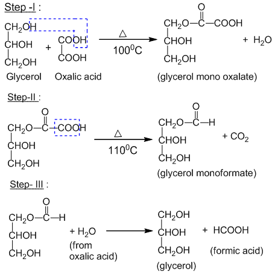
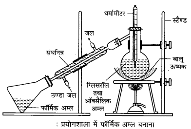
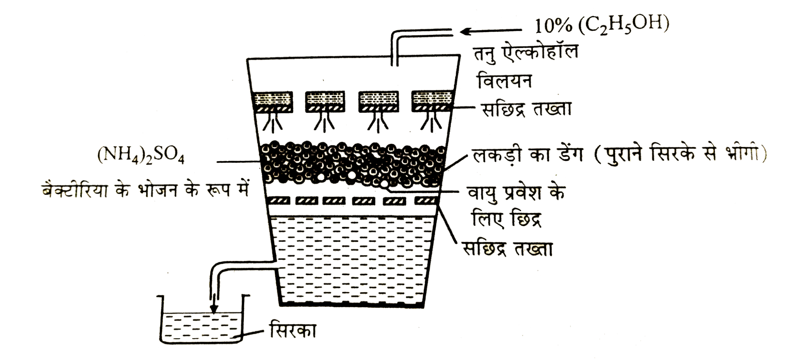

The (–COOH) group is called the carboxylic group.
Organic compounds containing the (–COOH) group are called carboxylic acids. These compounds exhibit acidic properties.
Carboxylic acids are of two types.
1. Aliphatic Acid
In these, the –COOH group is attached to an alkyl (R) group. Hence its general formula is R-COOH.
Example:
2. Aromatic Acid
In these, the –COOH group is attached to an aryl (Ar) group. Hence its general formula is Ar-COOH.
Example:
Aliphatic monocarboxylic acids are called fatty acids.
Higher acids obtained from fats, such as stearic and palmitic acid, etc., contain only one carboxylic group, therefore all monocarboxylic acids are collectively called fatty acids.
1. In Common Name System
According to this system, 'ic' is added at the end of the main name and then the word 'acid' is used. The names of the first four members are based on the names of their sources from which they were obtained. For example —
2. In IUPAC Nomenclature
Following steps are adopted in IUPAC nomenclature —
Example:
Following types of isomerism are found in monocarboxylic acids.
1. Chain Isomerism
When monocarboxylic acids having same molecular formula are present in different types of carbon chains (straight or branched), it is called chain isomerism. For example - molecular formula C₄H₈O₂ shows following two isomers.
2. Functional Isomerism
When compounds having same molecular formula show different functional groups, it is called functional isomerism. For example - molecular formula C₃H₆O₂ shows following two isomers.
General methods of preparation of monocarboxylic acids are as follows.
1. By oxidation of alcohols with acidic KMnO₄
2. By oxidation of aldehyde with acidic KMnO₄
3. By hydrolysis of alkyl cyanides
On hydrolysis of alkyl cyanides with dilute acid or alkalis, fatty acids are obtained.
4. By hydrolysis of ester
On heating ester with mineral acid or alkali, fatty acids are obtained.
5. By action of nitrous acid on acid amides
6. By hydrolysis of acid amides with alkali or mineral acids
Physical properties of monocarboxylic acids are as follows.
1. State and Odour
2. Solubility
3. Boiling Point
Boiling point of monocarboxylic acids is higher than other compounds of same molecular weight (like aldehydes, ketones and alcohols).
Carboxylic acids form dimers due to hydrogen bonding, which requires more energy to separate the molecules.
For this reason, boiling point of monocarboxylic acids is higher than other compounds of same molecular weight such as aldehydes, ketones and alcohols.
Due to positive inductive effect (+I effect) of methyl group in acetic acid, electron density of O–H bond increases, which makes release of H+ ion difficult.
On the contrary, due to absence of this effect in formic acid, it easily ionizes. Hence acetic acid is weaker than formic acid.
Chlorine atom present in chloroacetic acid has strong negative inductive effect (–I). Due to this, electrons of O–H bond are easily displaced towards oxygen and H+ is easily released. CH3 group present in CH3COOH which produces (+I) effect, decreases acidic nature.
Formic acid does not have any group that produces (+I) or (–I) effect. Hence formic acid is stronger than acetic acid and chloroacetic acid is stronger than acetic acid. In short, chloroacetic acid is stronger than formic acid and formic acid is stronger than acetic acid.
Acidic strength order:
Chemical properties of monocarboxylic acids are as follows.
(I) Substitution in alkyl group
Hell-Volhard-Zelinsky reaction (HVZ): When carboxylic acid is reacted with Cl₂ or Br₂ in presence of phosphorus, alpha-halogenated carboxylic acid is formed. This is called Hell-Volhard-Zelinsky reaction (HVZ).
(II) Reactions due to –COOH group
(A) Reactions in which –COO–H bond breaks (Formation of salts): Fatty acids dissolve in water to give hydrogen ions, so they form salts with metals, alkalis and metallic carbonates. For example —
1. Reaction with zinc — Zinc acetate is formed.
2. Reaction with NaOH — Sodium acetate is formed.
3. Reaction with Na₂CO₃ — Sodium acetate is formed.
(B) Reactions in which –CO–OH bond breaks:
1. Reaction with alcohol (Esterification) — On heating with alcohols in presence of dehydrating agents like conc. H₂SO₄ or dry HCl, esters are formed.
2. Reaction with phosphorus trichloride — Acid chlorides are formed.
3. Reaction with phosphorus pentachloride — Acid chlorides are formed.
4. Reaction with thionyl chloride — Acid chlorides are formed.
5. Reaction with ammonia — Ammonium salts are formed which on heating give amides.
6. Dehydration — When fatty acids are heated alone or with dehydrating agents like phosphorus pentoxide, one molecule of water is removed and anhydrides are formed.
(C) Reactions in which whole COOH group takes part:
1. Decarboxylation — When anhydrous sodium salt of fatty acids is heated with soda lime, alkanes are formed.
2. Kolbe reaction — On electrolysis of aqueous solution of sodium or potassium salts of fatty acids, alkanes are formed.
3. Schmidt reaction — When hydrazoic acid dissolved in inert solvent like CHCl₃ reacts with fatty acids in presence of sulphuric acid at 50–55°C, primary amines are formed.
4. On passing vapour of fatty acids over heated MnO at 300°C — Aldehydes and ketones are obtained.
5. Dry distillation of calcium salt of fatty acid — When this is done, aldehydes and ketones are obtained.
6. Reduction — Fatty acids are reduced in presence of lithium aluminium hydride to form alcohols.
7. Thermal decomposition of formic acid — When formic acid is heated to 160°C, it decomposes into CO and H₂O.
1. Formic acid to Acetic acid
2. Acetic acid to Formic acid
C=O group of carboxylic acid is involved in resonance. Hence it is stable, due to which it does not give any addition reaction.
Uses of carboxylic acid are as follows.
In laboratory, formic acid is prepared by heating a mixture of oxalic acid and anhydrous glycerol at 100–110°C. This reaction takes place in three steps —

In the final step, glycerol monoformate hydrolyses to give glycerol (which is reused in cycle) and formic acid.
Apparatus Diagram:

Physical properties of formic acid are as follows.
Uses of formic acid are as follows.
6–10% dilute solution of acetic acid is called vinegar. Apart from acetic acid, it also contains some organic acids, esters and coloured substances in small amounts.
Uses — Vinegar is widely used in making pickles and white lead.
Vinegar is generally obtained from sugarcane juice or alcohol by fermentation. This method is called quick vinegar process.
The process of converting complex organic matter into simple organic matter by microorganisms such as bacteria and yeast is called fermentation.
Quick Vinegar Method — This is an industrial production method of acetic acid.
Principle: In this method, acetic acid (main component of vinegar) is obtained from ethyl alcohol by fermentation by Mycoderma aceti bacteria.
Chemical Equation:
Apparatus: A large wooden vat is used in this process, in which wood shavings are filled in the middle. These shavings are soaked in old vinegar so that Mycoderma aceti bacteria come into them. There is a perforated plank in the upper part of the vat and a false perforated bottom towards the bottom. Air is allowed to enter through holes made in the lower part of the vat.

Method: Dilute solution of ethanol (10–12%) is slowly dripped from the upper part of the vat. When the ethanol solution passes through the wood shavings in the middle, it comes in contact with Mycoderma aceti bacteria and air coming from below. Bacteria oxidize ethanol to form acetic acid. The final product, vinegar, is collected from the bottom of the vat.
Precautions:
Pure (anhydrous) acetic acid is called glacial acetic acid.
Physical properties of acetic acid are as follows.
Uses of acetic acid are as follows.
| S.No. | Property | Formic Acid | Acetic Acid |
|---|---|---|---|
| 1 | Odour | Strong, pungent odour | Vinegar-like (pungent) odour |
| 2 | Boiling Point | Boiling point about 100°C | Boiling point about 118°C |
| 3 | Acidity | Stronger acid | Relatively weaker acid |
| 4 | Reaction with Tollen's reagent | It precipitates Tollen's reagent to silver mirror. | Acetic acid does not precipitate Tollen's reagent. |
Answer:
1. Which is most acidic among HCOOH, CH₃COOH, CCl₃COOH, C₆H₅COOH?
2. Which is more acidic between formic acid and acetic acid?
3. Which compound gives white precipitate with HgCl₂?
4. State the correct order of acidity.